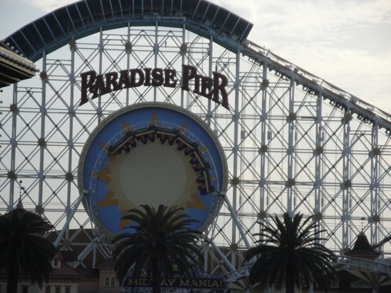
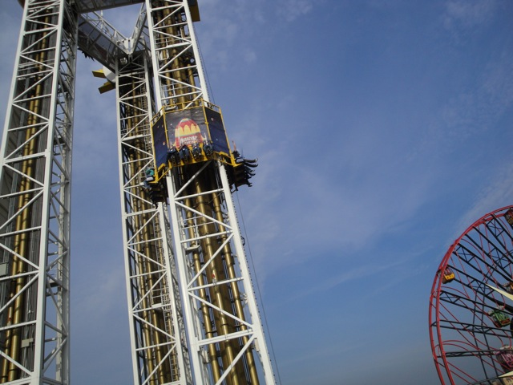
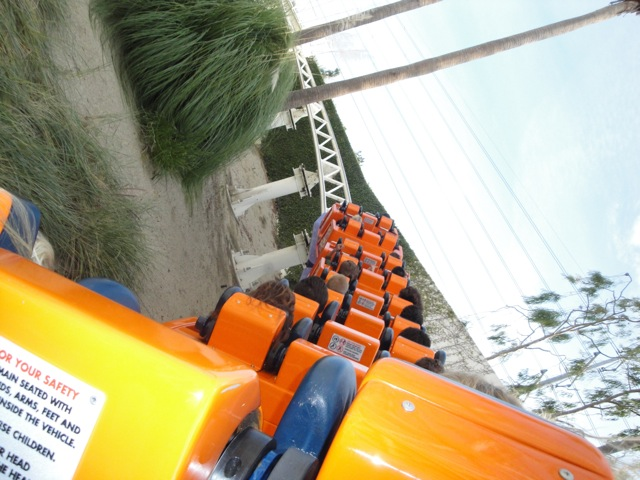
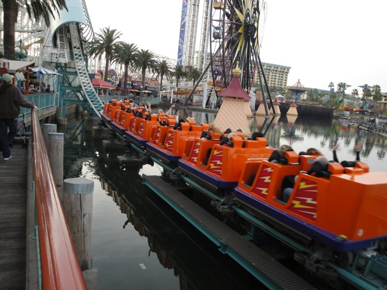

Disneyland Winter 2010
All right. After a sh*tty finals week and a rotten January, we decided to head down to Disneyland for some reason. And after having a little tire scare, we made it to the Disneyland
"Hi. I'm Celeste and I'm VERY ANGRY about missing the ramp to the Parking Lot because I personally find it to be the best ride in the whole resort. Gimme some ramp."
 Ok. So apparently January is Jungle Month at the Disneyland Resort.
Ok. So apparently January is Jungle Month at the Disneyland Resort.
Today, the role of shielding us from the tiny castle will be played by our invitation to the Disneyland Resort.
Ok. That's enough about Ramps, Tiny Castles, and Jungles. Let's go ride a roller coaster.
Good to see that Disneyland isn't that crowded today.
 Space must do some strange things to my new still camera as this picture turned out horrible.
Space must do some strange things to my new still camera as this picture turned out horrible.
Ok. Screw the Ramp. I LOVE SPACE MTN!!!!
 Why is it that when I leave for space in Florida, I get airtime and drops, but when I leave for space from California, I get music and right turns? I don't get the logic of it.
Why is it that when I leave for space in Florida, I get airtime and drops, but when I leave for space from California, I get music and right turns? I don't get the logic of it.
Yay!!! I found a hidden mickey!!!
 Up next would be the Matterhorn.
Up next would be the Matterhorn.
Matterhorn through the trees.
Great. Right when they fill up the lake in California Adventure, they go and drain the lake in Disneyland.
Somebody pop that Mickey Balloon. It detracts from the Indiana Jones theming.
Ahh. That's much better.
Ahh, Rules are for suckers. That's why I'm still pulling this rope.
Hey. At least she's a better driver than 90% of all SUV Owners.
Holy Crap!!! Is Celeste making Pizza instead of Cheesebread? EVERYBODY RUN!!!!! IT'S A SIGN OF THE APOCOLYPSE!!!!!
Getting to Tower of Terror was a pain in the ass thanks to that stupid wall.
 Well, we made it past the wall and onto Tower of Terror.
Well, we made it past the wall and onto Tower of Terror.
We had a good ride on Tower of Terror today. (Is that girl behind us flipping off the camera, or is it just me?)
Well, at least the gate leading to a Bugs Land was open.
Here's todays view of the Paradise Pier.
 I'll be back in April when the World of Color opens.
I'll be back in April when the World of Color opens.
Oh yeah. The Silly Swings have gone up. And just as expected, it looks much nicer than the Orange.

All right. Time for another coaster.

Maliboomer from California Screamin.

California Screamin was quite good today.

"NO!!! DON'T GO UP THERE!!! IT'S A TRAP!!!!!!"
Here's another look at the Silly Swings.
Our last ride of the day would indeed be Toy Story Mania.
It's fun and all, but I just wish they had the Cow Game from Wii Play in there somewhere.
Why does everyone keep dumping me?
What's wrong with this picture?
Home